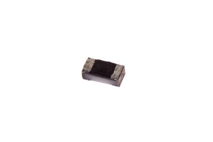
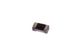
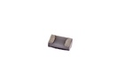

SMD (0402) 470k Ohm Resistor 1% - R42474A

Summary
Name: SMD (0402) 470k Ohm Resistor 1%
ID: RESE-0402-X-O474-67
Hex ID: R42474A
WebPage: https://github.com/oomlout/oomlout-OOMP/wiki/RESE-0402-X-O474-67
Short URL: http://oom.lt/R42474A
Revision History: https://github.com/oomlout/oomlout-OOMP/blob/master/parts/RESE-0402-X-O474-67/
| Type |
Size |
Color |
Description |
Index |
RESE
Resistor |
0402
SMD (0402) |
X
|
O474
470k Ohm |
67
1% |
Images


About
This part is awaiting a description.
Specifications
| Info |
Value |
| Type |
Resistor |
| Size |
SMD (0402) |
| Description |
470k Ohm |
| Index |
1% |
| Width |
0.5 mm |
| Length |
1.0 mm |
| Number of Pins |
2 |
Extra Details
Spotted a mistake, want to add more? Let us know oomp@oomlout.com
All images and resources are licensed [CC BY-SA] unless otherwise stated (ie. the datasheets)